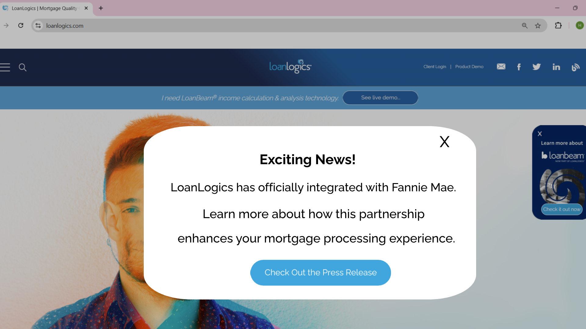
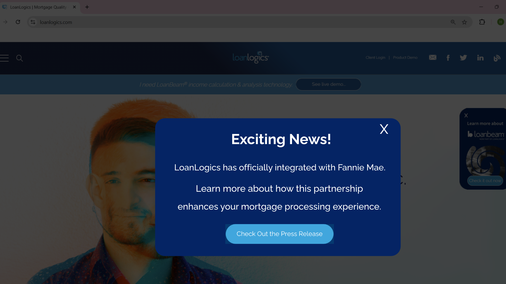
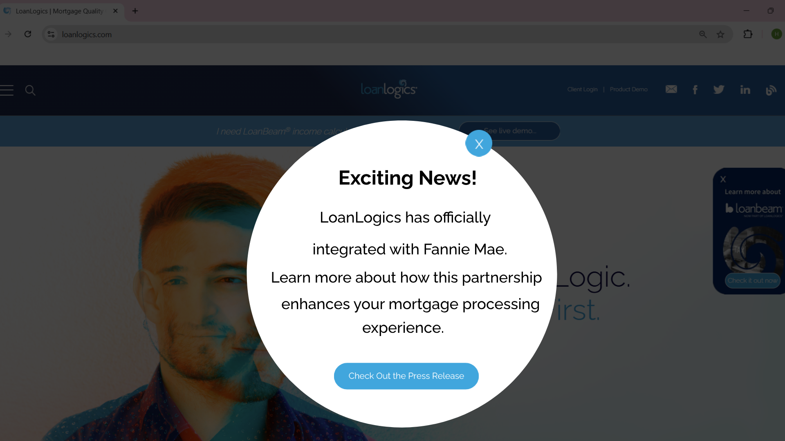

LoanLogics — CARBN Page & Marketing Banners
A hands-on web design and frontend project for LoanLogics, where I designed and built the CARBN page and marketing banners using HTML and CSS. My contribution covered both the visual design and the frontend implementation.
01 — Problem
LoanLogics needed a dedicated CARBN web page and supporting marketing banners to communicate its offering through the website.
The work involved creating the page and banner visuals and translating those designs into working frontend code.
02 — My Role
I handled both the design and frontend implementation of the CARBN page and marketing banners. Rather than handing off static designs alone, I also built the page using HTML and CSS.
UI Design
- Designed the CARBN page layout.
- Worked on content presentation and visual hierarchy.
- Designed supporting marketing banners.
- Maintained consistency with the website experience.
Frontend Development
- Built the CARBN page using HTML.
- Styled the page using CSS.
- Implemented the designed layouts in the website.
- Worked on translating the visual design into a working page.
03 — Constraints
- The page needed to align with the existing LoanLogics website and brand experience.
- The design needed to communicate the CARBN offering clearly through its page layout.
- The marketing banners needed to fit the website's visual language and content.
- The final design needed to be implemented using HTML and CSS.
04 — Key Design Decisions & Trade-offs
Page Structure & Content Hierarchy
Designed the CARBN page to present its content in a structured way, making the information easier to navigate and understand.
Visual Consistency
Kept the page and banner designs aligned with the existing LoanLogics website experience.
Design-to-Code Execution
Built the page using HTML and CSS, translating the visual design into a functioning website experience.
Page & Banner Coordination
Designed the CARBN page and its supporting marketing banners as part of the wider website experience.
05 — What I Designed & Built
The following visuals represent the main deliverables from my LoanLogics work. The current live website has since been redesigned.

Product messaging and value proposition

Feature and benefits presentation

Product navigation and supporting content
6 — CTA Exploration & Stakeholder Validation
I explored multiple visual directions and presented the alternatives to leadership for review.

Concept 1

Concept 2 — Selected by VP

Concept 3
The selected direction was chosen through stakeholder review and was subsequently used for implementation.
06 — What Shipped
- CARBN page designed and implemented using HTML and CSS.
- Supporting marketing banners designed for the website.
- Frontend implementation of the designed page.
07 — Outcome
Live Website Experience
The CARBN page and marketing banner work formed part of the LoanLogics website experience. The website was previously live and can be referenced through its archived version.
This project demonstrates my ability to take a web design task beyond visual mockups and build the experience directly using HTML and CSS.
View LoanLogics archived website ↗The original website has since been redesigned. The archive link is provided as historical visual evidence; it may not preserve every original page or banner exactly as launched.
08 — What I Would Improve
- Validate the page experience across a wider range of screen sizes and browsers.
- Review the page content and visual hierarchy against user feedback.
- Improve reusable HTML/CSS structures to make future content updates easier.
- Evaluate page engagement and conversion performance using analytics where available.